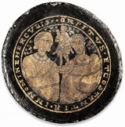

| |
The department's
name has changed several times in its history according to the evolution
of the Museum. From 1866 it was known as the Department of British and
Medieval Antiquities before becoming the Department of Medieval and
Later Antiquities in 1969. The most recent change occurred in 2000 when
the title Medieval and Modern Europe was adopted to express more precisely
the chronology and origins of the material curated by the department.
The collections
have been enriched by the erudition and expertise of a succession of
distinguished keepers and by the generous benefactions of individuals.
Sir Hans Sloane (1660-1753) enjoyed a reputation as a scientist, physician,
antiquarian and collector. His vast collection of material, which he
bequeathed to the nation, gave rise to the British Museum. The department
of Medieval and Modern Europe holds a number of significant items that
once belonged to Sloane including the Sloane Astrolabe (SL 54); the
Sword of State (SL 17537); and the Phoenix jewel (SL.1778).
Augustus Wollaston
Franks (1826-97), keeper of the department of British and Medieval Antiquities
and Ethnography, used his private fortune to acquire medieval pottery
and tiles, monumental brasses, seal-dies, ivories, enamels, jewellery
and silver for the museum. Among the unique objects which came to the
department during his keepership are the 8th century Franks Casket (1867,
1-20,1); the late fourteenth century Royal Gold Cup (1892,5-1,1) and
an English girdle prayer book from about 1540-45 (1894,7-29,1).
Sir Charles Hercules
Read was keeper of the department of British and Medieval Antiquities
and Ethnography from 1896-1921. During his keepership, the Waddesdon
Bequest came to the British Museum (in 1898) and the Falcke collection
of Wedgwood (in 1909). Other significant acquisitions included the Ashanti
Ewer (1896,7-27,1); the Holy Thorn pendant reliquary (1902,2-10,1) and
a thirteenth century crozier head from Belgium (1898,5-21,1).
Single, large acquistions
or individual benefactions have contributed to the character of the
department and helped to determine its collecting policy. The comprehensive
horological collection springs principally from the acquisition of collections
made by Charles Fellowes (1874), Octavius Morgan (1888) and Courtney
Adrian Ilbert (1958). Similarly, in 1978 the gift of 1200 pieces of
jewellery from the private collector Mrs Anne Hull Grundy included significant
pieces from Lalique, Boucheron and Feuillâtre and formed the basis of
a collecting policy which, since 1979, has seen the department actively
extending its applied arts collections into the 20th century.
|
|

Gold-glass
medallion showing Herakles, late Roman / Early Christian, 4th century
AD, probably from the catacombs in Rome
|
|
|
|